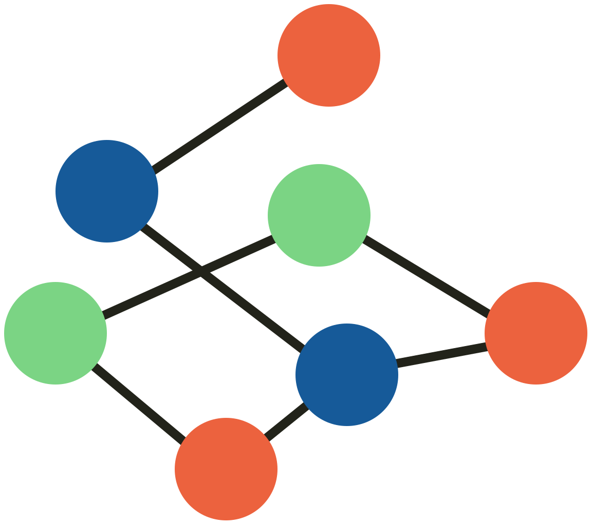

<!doctype html>
<html lang="en">
<head>
<meta charset="utf-8">
<meta name="viewport" content="width=device-width, initial-scale=1">
<title>GDI mark and page, comparison sheet</title>
<!-- Serve /home/user/gloki-site with `python3 -m http.server 8765`, then open
     /docs/brand/2026-10-26/sheets/sheet.html?route=a (or b, c). Reuses the site's own CSS and fonts. -->
<link rel="stylesheet" href="../../../../style.css">
<style>
  body { background: #fff; }
  .s { max-width: 1520px; margin: 0 auto; padding: 28px 40px 48px; }
  .s h1 { font-size: 34px; line-height: 1.1; margin: 0 0 6px; }
  .s .sub { color: var(--ink-soft); font-size: 17px; margin: 0 0 10px; max-width: 70rem; }
  .chip { display: inline-block; font: 600 14px/1 var(--display); padding: 7px 10px; border-radius: 4px; border: 2px solid var(--ink); margin-right: 8px; }
  .chip.dec { border-color: var(--verm-text); color: var(--verm-text); }
  .s h2 { font-size: 20px; margin: 28px 0 12px; padding-top: 14px; border-top: 1px solid var(--ink); }
  .row { display: flex; flex-wrap: wrap; gap: 28px; align-items: flex-end; }
  .cell { display: flex; flex-direction: column; align-items: flex-start; gap: 8px; }
  .cell small { font-size: 13px; color: var(--ink-soft); line-height: 1.3; }
  .cell .box { display: flex; align-items: center; justify-content: center; }
  canvas.px { width: 96px; height: 96px; image-rendering: pixelated; border: 1px solid #d5dae1; }
  canvas.px32 { width: 128px; height: 128px; image-rendering: pixelated; border: 1px solid #d5dae1; }
  .tab { display: flex; align-items: center; gap: 8px; background: #dfe3e8; padding: 8px 12px 0; border-radius: 6px 6px 0 0; width: 300px; }
  .tab div { display: flex; align-items: center; gap: 8px; background: #fff; border-radius: 8px 8px 0 0; padding: 8px 12px; font: 13px/1 system-ui, sans-serif; color: #222; width: 240px; }
  .tab.dark { background: #202124; } .tab.dark div { background: #35363a; color: #e8eaed; }
  .today { opacity: .9; }
  table.pal { border-collapse: collapse; font-size: 15px; }
  table.pal th, table.pal td { text-align: left; padding: 6px 14px 6px 0; border-bottom: 1px solid #d5dae1; vertical-align: middle; }
  table.pal th { font: 600 14px var(--display); }
  .sw { display: inline-block; width: 28px; height: 28px; border-radius: 4px; vertical-align: middle; box-shadow: inset 0 0 0 1px rgba(0,0,0,.12); }
  .ok { font-weight: 700; } .no { font-weight: 700; color: var(--verm-text); }
  .mocks { display: flex; gap: 32px; align-items: flex-start; flex-wrap: wrap; }
  .frame { border: 1px solid #c4cad3; overflow: hidden; position: relative; background: #fff; }
  .frame iframe { border: 0; transform-origin: 0 0; position: absolute; left: 0; top: 0; }
  .desk { width: 864px; height: 540px; } .desk iframe { width: 1440px; height: 900px; transform: scale(.6); }
  .mob { width: 360px; height: 740px; } .mob iframe { width: 360px; height: 740px; }
  .strip { display: flex; flex-direction: column; gap: 14px; width: 220px; }
  .strip svg { width: 220px; height: auto; }
  .strip * { animation: none !important; }
  .strip .start .link-old { opacity: 1; } .strip .start .link-new { opacity: 0; }
  .strip .start .voucher { fill: var(--ink); } .strip .start .newcomer use { fill: var(--verm); }
  .samples p { margin: 0 0 8px; font-size: 16px; }
  .samples .warn { margin: 6px 0 0; font-size: 15px; }
  .legendrow { display: flex; gap: 14px; font-size: 14px; color: var(--ink-soft); flex-wrap: wrap; }
  .legendrow span { display: inline-flex; align-items: center; gap: 5px; }
  .lockups img { display: block; margin-bottom: 14px; }
</style>
</head>
<body>
<div class="s" id="s"></div>
<script>
const R = {
  a: {
    title: 'Route A · The page takes the mark’s colours',
    sub: 'The 2022 mark stays exactly as it is. The page borrows its colours: the mark’s orange becomes “not yet”, its navy becomes the link colour, its dark becomes the ink, and a darker version of its green marks “works now”. The 16px and 32px masters are redrawn at the same colours, only heavier.',
    chips: [['Mark: unchanged'], ['Brand blue: unchanged']],
    vars: { '--ink': '#22231A', '--ink-soft': '#45463C', '--blue-text': '#165A99', '--verm': '#EC623E', '--verm-text': '#B93A13', '--go': '#2A7F35' },
    extraCss: '.glyph.g-solid use{fill:var(--go)}',
    pal: [
      ['Ink: headings, body, buttons', '#22231A', 'text', '#111418'],
      ['Ink soft: secondary text', '#45463C', 'text', '#3b424b'],
      ['Links, focus ring (mark navy)', '#165A99', 'text', '#1d4ed8'],
      ['Vouched-in figures (brand blue)', '#3b82f6', 'graphic', '#3b82f6'],
      ['“Not yet”: figures, rules (mark orange)', '#EC623E', 'graphic', '#e0412b'],
      ['“Not yet”: words', '#B93A13', 'text', '#b42318'],
      ['“Works now”: legend figure and label (from mark green)', '#2A7F35', 'text', null],
      ['Mark green, as drawn in the mark', '#7BD484', 'mark', null],
    ],
  },
  b: {
    title: 'Route B · The mark joins the Isotype',
    sub: 'The 2022 figure keeps all seven nodes and every link, in the same places. It is redrawn in the page’s ink, and a newcomer in brand blue sits where the two 2022 links cross. The links run straight through it, so the newcomer sits between two linked pairs and has four links: the vouching rule. The 16px master is the newcomer and its four.',
    chips: [['Brand blue: unchanged'], ['Decision: the mark changes (colours, plus one node)', 'dec']],
    vars: {}, extraCss: '',
    pal: [
      ['Ink: text, and the mark', '#111418', 'text', null],
      ['Ink soft', '#3b424b', 'text', null],
      ['Links, focus ring', '#1d4ed8', 'text', null],
      ['Vouched-in figures; the newcomer in the mark', '#3b82f6', 'graphic', null],
      ['“Not yet”: figures', '#e0412b', 'graphic', null],
      ['“Not yet”: words', '#b42318', 'text', null],
    ],
  },
  c: {
    title: 'Route C · One person added to the 2022 mark',
    sub: 'The lighter version of B. The 2022 mark keeps its drawing and its orange, green and navy. The only addition is one brand-blue node where the two links cross: the newcomer with four links. The page does not change. The 16px master is the newcomer and its four, in the 2022 colours.',
    chips: [['Brand blue: unchanged'], ['Page: unchanged'], ['Decision: the mark gains one node', 'dec']],
    vars: {}, extraCss: '',
    pal: [
      ['Page palette', 'as today', 'note', null],
      ['Newcomer in the mark (brand blue)', '#3b82f6', 'graphic', null],
      ['Mark orange', '#EC623E', 'mark', null],
      ['Mark navy', '#165A99', 'mark', null],
      ['Mark green', '#7BD484', 'mark', null],
      ['Mark lines', '#22231A', 'mark', null],
    ],
  },
};
const route = new URLSearchParams(location.search).get('route') || 'a';
const C = R[route];
const base = `../route-${route}/${route}`;
for (const [k, v] of Object.entries(C.vars)) document.documentElement.style.setProperty(k, v);
if (C.extraCss) document.head.insertAdjacentHTML('beforeend', `<style>${C.extraCss}</style>`);

function lum(h) { h = h.replace('#', ''); const c = [0, 2, 4].map(i => parseInt(h.substr(i, 2), 16) / 255).map(v => v <= .04045 ? v / 12.92 : ((v + .055) / 1.055) ** 2.4); return .2126 * c[0] + .7152 * c[1] + .0722 * c[2]; }
function cr(a, b = '#ffffff') { const x = lum(a), y = lum(b); return (Math.max(x, y) + .05) / (Math.min(x, y) + .05); }
function verdict(hex, kind, bg) {
  if (kind === 'note') return '';
  const r = cr(hex, bg), need = kind === 'text' ? 4.5 : 3;
  if (kind === 'mark') return `${r.toFixed(2)}:1 <small>(logo, no minimum)</small>`;
  return `${r.toFixed(2)}:1 <span class="${r >= need ? 'ok' : 'no'}">${r >= need ? 'passes' : 'fails'} ${need}:1</span>`;
}
const pal = C.pal.map(([role, hex, kind, was]) => `<tr><td>${hex.startsWith('#') ? `<span class="sw" style="background:${hex}"></span>` : ''}</td><td>${role}</td><td><code>${hex}</code>${was && was.toLowerCase() !== hex.toLowerCase() ? ` <small>(was <code>${was}</code>)</small>` : ''}</td><td>${kind}</td><td>${hex.startsWith('#') ? verdict(hex, kind, '#ffffff') : ''}</td><td>${hex.startsWith('#') ? verdict(hex, kind, '#f1f5fb') : ''}</td></tr>`).join('');

const cell = (inner, label) => `<div class="cell"><div class="box">${inner}</div><small>${label}</small></div>`;
document.getElementById('s').innerHTML = `
  <h1>${C.title}</h1>
  <p class="sub">${C.sub}</p>
  <div>${C.chips.map(([t, c]) => `<span class="chip ${c || ''}">${t}</span>`).join('')}</div>

  <h2>The mark at 16, 32, 64 and 200px</h2>
  <div class="row">
    ${cell(``, '16px<br>master')}
    ${cell(`<canvas class="px" data-src="${base}-favicon-16.svg" data-s="16"></canvas>`, '16px at 1× pixels<br>(enlarged)')}
    ${cell(``, '32px<br>master')}
    ${cell(`<canvas class="px32" data-src="${base}-favicon-32.svg" data-s="32"></canvas>`, '32px at 1× pixels<br>(enlarged)')}
    ${cell(``, '64px')}
    ${cell(``, '200px')}
    ${cell(``, 'One colour')}
  </div>
  <div class="row" style="margin-top:22px">
    ${cell(`<div class="tab"><div>Global Democracy Initiative</div></div>`, 'Browser tab, light')}
    ${cell(`<div class="tab dark"><div>Global Democracy Initiative</div></div>`, 'Browser tab, dark')}
    ${cell(`<div class="tab today"><div>Global Democracy Initiative</div></div>`, 'Today, for comparison')}
    ${cell(`<canvas class="px" data-src="../../../../assets/gdi-mark.svg" data-s="16"></canvas>`, 'Today’s mark at 16px,<br>1× pixels')}
    ${cell(``, '16px master, one colour<br>(shown at 32)')}
  </div>
  <div class="row lockups" style="margin-top:22px">
    ${cell(`<div></div>`, 'Lockup, name set in Jost 600 (outlined), colour and one colour')}
  </div>

  <h2>Palette, with contrast computed on white and on the status-board field (#f1f5fb)</h2>
  <table class="pal"><tr><th></th><th>Role</th><th>Hex</th><th>Use</th><th>On white</th><th>On field</th></tr>${pal}</table>

  <h2>The first screen, recoloured (the live index.html, with this route’s colours and mark injected)</h2>
  <div class="mocks">
    <div class="cell"><div class="frame desk"><iframe id="fd" src="../../../../index.html" title="Desktop mock"></iframe></div><small>Desktop, 1440 × 900, shown at 60%</small></div>
    <div class="cell"><div class="frame mob"><iframe id="fm" src="../../../../index.html" title="Phone mock"></iframe></div><small>Phone, 360 × 740, actual size</small></div>
    <div class="strip">
      <div class="cell"><div id="st1" class="start"></div><small>Animation start: newcomer “not yet”, two old links</small></div>
      <div class="cell"><div id="st2"></div><small>End: vouched in, four links</small></div>
      <div class="samples">
        <p><a href="#">A link in body text</a></p>
        <p><span class="notyet">Not yet:</span> words in the “not yet” colour.</p>
        <div class="legendrow">
          <span><svg class="glyph g-solid" viewBox="0 0 20 40"><use href="#person"/></svg>Works now</span>
          <span><svg class="glyph g-out" viewBox="0 0 20 40"><use href="#person"/></svg>Planned</span>
        </div>
        <p class="warn"><strong>Before you join.</strong> The warning box.</p>
      </div>
    </div>
  </div>`;

// 1× pixel views
document.querySelectorAll('canvas[data-src]').forEach(c => {
  const s = +c.dataset.s; c.width = s; c.height = s;
  const i = new Image(); i.onload = () => { const x = c.getContext('2d'); const ar = i.naturalWidth / i.naturalHeight || 1; let w = s, h = s; if (ar > 1) h = s / ar; else w = s * ar; x.drawImage(i, (s - w) / 2, (s - h) / 2, w, h); }; i.src = c.dataset.src;
});

// Inject the route into each iframe of the live page
let loaded = 0;
function inject(fr) {
  const d = fr.contentDocument;
  const css = `:root{${Object.entries(C.vars).map(([k, v]) => `${k}:${v}`).join(';')}} ${C.extraCss}`;
  d.head.insertAdjacentHTML('beforeend', `<style>${css}</style>`);
  const img = d.querySelector('.brand img'); if (img) img.src = new URL(`${base}-favicon-32.svg`, location.href).href;
  if (fr.id === 'fd') {
    // copy the person symbol and the hero figure into the sheet for the start/end strip
    const defs = d.querySelector('body > svg'); document.body.insertAdjacentHTML('afterbegin', defs.outerHTML);
    const hero = d.querySelector('.crowd svg').outerHTML;
    document.getElementById('st1').innerHTML = hero; document.getElementById('st2').innerHTML = hero;
  }
  if (++loaded === 2) window.sheetReady = true;
}
['fd', 'fm'].forEach(id => { const fr = document.getElementById(id); fr.addEventListener('load', () => inject(fr)); });
</script>
</body>
</html>
